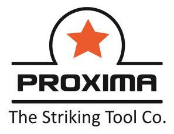

MITEX 2026 · Индия · Стенд 7B802
PROXIMA STEEL FORGE PVT LTD
Карточка проверена 10 ноября 2026, 09:28 · Источник ↗ · Снимок оригинальной карточки ↗
О компании
Наша компания является одним из крупнейших производителей садового инструмента в Азии. Наша компания сертифицирована по стандартам ISO 9001:2015, ISO 14001:2015, BSCI, SCAN и FSC. Мы являемся одной из ведущих индийских компаний по производству ручного инструмента. Компания постоянно завоевывает награды как лучший экспортер в отрасли. Постоянство и качество продукции помогли Proxima расширить свое присутствие на международном рынке
Контакты
Все контактные сведения из карточки
Контакты Proxima Steel Forge Pvt. Ltd, B-14 & 15, Focal Point Extension, Телефон: +919779712801 E-mail: info@proximasteel.com Адрес: 144004, Индия, Asia, Jalandhar Веб-сайт: http://www.proximasteel.com E-mail: info@proximasteel.com Телефон: +917341143412
Все рубрики участника
Mitex - Рубрикатор
- 2. Садовая техника, инструмент, инвентарь, оборудование, расходные материалы и насосы
Зал
- Зал № 7
Участник выставки
- MITEX
Фотографии и изображения
Видео, каталоги и документы
В доступной карточке нет видео или документов. Смотрите сайт участника.